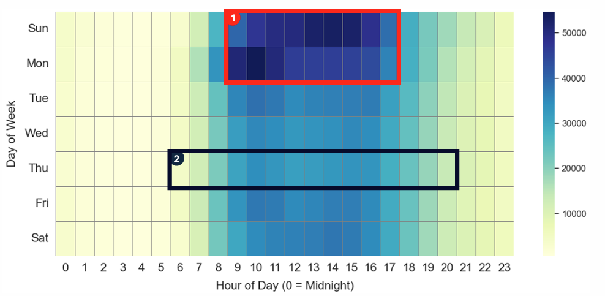

Association Rule Mining (Apriori Algorithm)
Association Rule Mining (Apriori Algorithm) is used to identify predictable and hidden relationships between items purchased together within a single Instacart transaction. The analysis is driven by three core metrics that are used to evaluate the strength and importance of each rule. • Support: Measures how frequently an item combination appears in the entire dataset. • Confidence: Indicates the reliability of the rule (e.g. the probability of buying item Y given that item X has already been purchased). • Lift: Quantifies the strength of the association. A Lift value greater than 1.0 means the two items are more likely to be bought together than if they were independent, confirming a positive relationship.
Time-Based Ordering Patterns
Online grocery orders peak on Saturdays and Sundays, especially between 9:00 a.m. and 5:00 p.m., suggesting that many customers use the weekend to prepare for the week. Thursdays display the lowest order volume.
